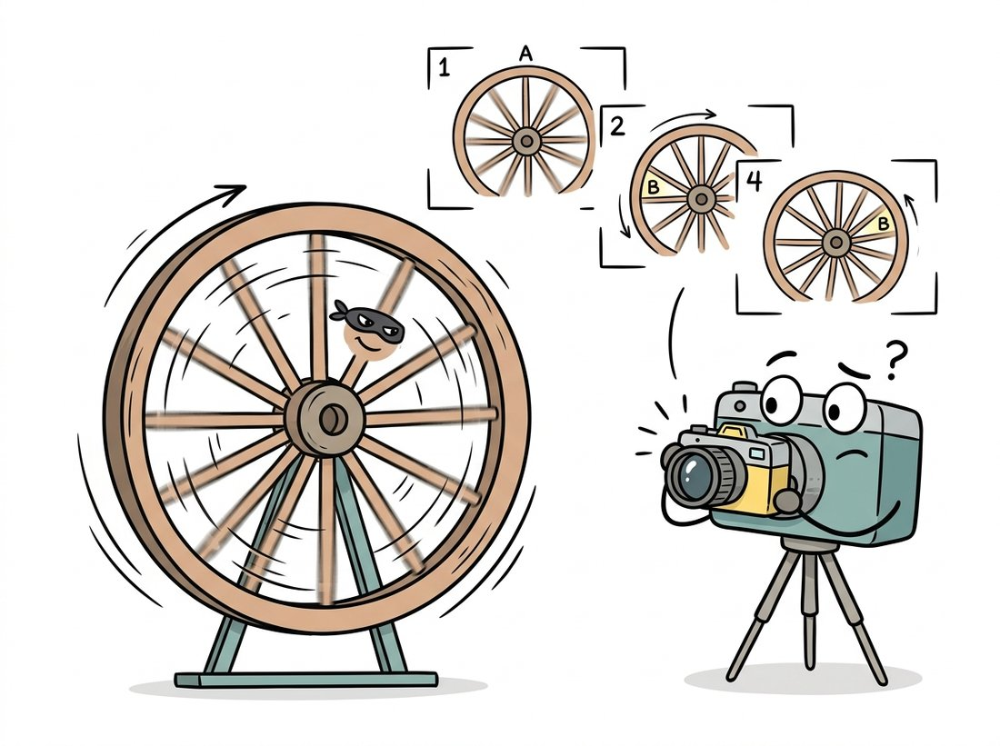

"I used to be a continuous function with infinite detail. Then I got sampled at 512 by 512 and rounded to 8 bits. You adapt."
A Recently Discretized Signal
Digitization is two separate, independent acts of information loss: sampling chops space into a grid, and quantization rounds brightness into a ladder of levels; every digital image artifact you will ever debug traces back to one of these two, and the cures are different. Sample too coarsely and high-frequency detail does not vanish politely; it disguises itself as false low-frequency patterns called aliasing. Quantize too coarsely and smooth gradients shatter into visible bands. This section gives you the vocabulary, the math, and the antidotes for both.
In Section 1.1 we followed light through the lens and sensor to a RAW mosaic. We glossed over the most fundamental step of all: the optical image projected onto the sensor is a continuous function of position and brightness, and the array in your program is neither. Formally, the scene presents an irradiance function $f(x, y)$ defined at every real-valued point and taking real values. The sensor turns it into $f[m, n]$, defined only at integer grid positions (sampling), and the ADC turns each value into one of finitely many integers (quantization). Two axes of discretization, two failure modes, two sets of engineering tools, which is exactly how this section is organized.
1. Sampling: From Function to Grid Beginner
Sampling evaluates the continuous image on a regular lattice with horizontal pitch $\Delta x$ and vertical pitch $\Delta y$:
$$f[m, n] = f(m \, \Delta x, \; n \, \Delta y), \qquad m = 0, \dots, M-1, \; n = 0, \dots, N-1.$$A persistent misconception, worth killing early, is that a pixel is a little square of color. A pixel is a sample: a single measurement associated with a point (in practice, a small area-average around that point, since photosites integrate light over their surface). The little-square picture causes real bugs, for example when aligning coordinate systems during the geometric warps of Chapter 5, where the question "is pixel (0,0) the corner or the center of the first sample area?" changes results by half a pixel.
How fine must the grid be? The celebrated sampling theorem of Nyquist and Shannon answers precisely: a signal can be perfectly reconstructed from its samples if it contains no frequency at or above half the sampling rate,
$$f_{\text{sample}} > 2 f_{\text{max}},$$where for images "frequency" means cycles per unit distance: fine stripes are high frequency, smooth washes are low frequency. The full machinery behind this statement (Fourier transforms, spectra, and the elegant proof) arrives in Chapter 4; what you need now is the consequence of violating it.
2. Aliasing: When Detail Lies Intermediate
When the scene contains frequencies above the Nyquist limit, those frequencies do not disappear from the sampled image. They fold back, masquerading as lower frequencies that were never in the scene. This is aliasing, and you have seen it: the wagon-wheel that spins backwards on film, the shimmering moire on a striped shirt in a video call, the jagged staircase on a rendered diagonal line. The defining property of aliasing is that it manufactures plausible-looking false structure, which is what makes it dangerous for measurement and for machine learning alike. The illustration below captures the wagon-wheel case: fast detail in disguise, pretending to be a slow pattern.

The backwards-spinning wagon wheel in old Westerns is aliasing caught on film: the camera samples 24 times a second, the spokes move slightly more than one spoke-spacing between frames, and your brain reconstructs the smallest motion consistent with the samples, which happens to point backwards. Helicopters whose rotors appear frozen in phone videos are the same trick at a different frame rate. Aliasing does not just blur detail; it confidently invents motion that never happened.
The torture test for aliasing is the zone plate, a pattern whose frequency grows steadily with radius. Code 1.2.1 builds one and downsamples it two ways: naive pixel-dropping versus area averaging.
import cv2
import numpy as np
# Zone plate: spatial frequency increases with radius, a torture test
# for any resampling code.
n = 512
y, x = np.mgrid[0:n, 0:n].astype(np.float32)
r2 = (x - n / 2) ** 2 + (y - n / 2) ** 2
zone = (127.5 + 127.5 * np.cos(np.pi * r2 / 256.0)).astype(np.uint8)
# Downsample 4x by simply keeping every 4th pixel (no pre-filter):
small_naive = cv2.resize(zone, (n // 4, n // 4),
interpolation=cv2.INTER_NEAREST)
# Downsample 4x by averaging each 4x4 block (a built-in anti-alias filter):
small_clean = cv2.resize(zone, (n // 4, n // 4),
interpolation=cv2.INTER_AREA)
cv2.imwrite("zone_full.png", zone)
cv2.imwrite("zone_naive.png", small_naive) # ghost rings: aliasing
cv2.imwrite("zone_clean.png", small_clean) # fine rings fade to flat gray
INTER_NEAREST result sprouts phantom rings far from the center, false low frequencies created by undersampling. The INTER_AREA result instead lets unresolvable detail fade smoothly to gray, which is the honest answer.Open the three saved files side by side and the lesson is immediate: the naive version contains concentric rings that simply do not exist in the original at those positions, while the area-averaged version degrades gracefully. The general rule, which you will use every time you build an image pyramid in Chapter 4 or resize a training set, is to remove the frequencies the new grid cannot carry before resampling, usually with a Gaussian or box blur.
In Code 1.2.1, change the single number 4 in both resize calls to a sweep of 2, 4, 8, 16 and re-save each pair. Watch two things as the factor grows: the phantom rings in the INTER_NEAREST output march steadily inward toward the center (higher and higher true frequencies are folding down to ever-lower false ones), while the INTER_AREA output simply loses its outer rings to flat gray. The aha moment is that aliasing does not get blurrier with more undersampling; it relocates, inventing brand-new structure at a new radius each time. For a second experiment, leave the factor at 4 but replace the zone plate with your own photo of a brick wall or a striped shirt and find the smallest factor at which moire appears in the naive version.
A common belief is that aliasing is just visual "jaggies" that a blur applied to the sampled image will fix. In fact, aliasing is information loss that has already happened: once high frequencies have folded down onto low ones during sampling, the false low-frequency pattern is indistinguishable from real scene content, so no later filter, sharpening, or super-resolution network can separate them. Smoothing the aliased result only blurs the fabricated rings; it cannot recover the true detail or erase the lie. The blur must come before subsampling (the anti-alias pre-filter of INTER_AREA), not after. This is why a model trained on carelessly downsampled images inherits artifacts that no post-processing step can undo.
Downsampling is safe only after a low-pass filter has removed the detail the smaller grid cannot represent. Blurring sounds like vandalism but is actually honesty: the alternative is not sharpness, it is fabricated patterns. This single rule explains why cv2.INTER_AREA exists, why image pyramids blur at every level, and why deep learning frameworks added antialias=True flags to their resize ops after researchers showed aliasing in data pipelines measurably hurts model accuracy and robustness.
A correct manual downsampler (design a Gaussian whose cutoff matches the scale factor, pad, filter, then subsample) runs 30 to 50 lines. Production libraries fold the pre-filter into the resize call:
# Downsample 4x two ways, each with its anti-alias pre-filter folded
# into the resize call so unresolvable detail fades instead of aliasing.
import cv2
from skimage.transform import rescale
small = cv2.resize(img, None, fx=0.25, fy=0.25,
interpolation=cv2.INTER_AREA) # box pre-filter
small2 = rescale(img, 0.25, anti_aliasing=True,
channel_axis=-1) # Gaussian pre-filter
INTER_AREA averages source pixel blocks; scikit-image's anti_aliasing=True applies a scale-matched Gaussian before interpolating.3. Quantization: From Real Values to Integer Levels Intermediate
The second discretization acts on brightness. A $b$-bit quantizer maps the continuous range of measured intensities onto $L = 2^b$ discrete levels. With uniform spacing, the step size between adjacent levels is
$$\Delta = \frac{I_{\max} - I_{\min}}{2^b},$$and every true value within a step gets rounded to that step's representative. The rounding error is at most $\Delta/2$ per pixel, and if the true values are spread evenly within each step, the mean squared error of quantization is the classic result
$$\mathrm{MSE}_{\text{quant}} = \frac{\Delta^2}{12},$$which translates into a signal-to-noise ratio that improves by about $6.02$ dB for every added bit. The decibel (dB) is just a logarithmic way to quote a ratio of powers, $10 \log_{10}(\text{ratio})$, so that each factor of ten becomes 10 dB and small differences are easy to read; Section 1.3 writes the dynamic-range version of the same definition. The 6 dB rule has a simple origin: one extra bit doubles the number of levels, which halves the step size $\Delta$, which quarters the error power $\Delta^2/12$, and $10 \log_{10} 4 \approx 6.02$. Eight bits give roughly 48 to 50 dB, comfortably below what most humans can spot in a photograph viewed casually; that is why 8-bit images dominate, as we saw when handling dtypes in Chapter 0.
The visible failure of coarse quantization is banding (also called posterization or false contouring): smooth gradients break into discrete plateaus with visible seams. The eye is exquisitely sensitive to these seams because they look like edges, and edges carry meaning. Code 1.2.3 quantizes a smooth ramp to decreasing bit depths so you can find your own threshold of visibility.
import numpy as np
import cv2
# A perfectly smooth horizontal ramp, 0 to 255 across 1024 columns.
ramp = np.tile(np.linspace(0, 255, 1024, dtype=np.float32), (128, 1))
def quantize(img, bits):
"""Uniformly requantize a [0, 255] image to 2**bits levels."""
levels = 2 ** bits
step = 255.0 / (levels - 1)
return (np.round(img / step) * step).astype(np.uint8)
panels = []
for bits in [8, 5, 3, 2]:
q = quantize(ramp, bits)
panels.append(q)
print(f"{bits} bits -> {len(np.unique(q)):>3} distinct levels")
cv2.imwrite("banding.png", np.vstack(panels)) # stacked for comparison
8 bits -> 256 distinct levels
5 bits -> 32 distinct levels
3 bits -> 8 distinct levels
2 bits -> 4 distinct levels
Figure 1.2.1 puts the two discretizations side by side on a one-dimensional slice, because seeing them as separate operations is the key mental model: sampling acts on the horizontal axis, quantization on the vertical one.
4. Dithering: Trading Banding for Noise Advanced
Quantization error is deterministic: every pixel in a band rounds the same way, which is precisely why the eye sees a contour. Dithering breaks that determinism by adding controlled randomness, replacing correlated banding with uncorrelated grain that the eye averages away. The classic algorithm is Floyd-Steinberg error diffusion: quantize each pixel, then push its rounding error onto the not-yet-visited neighbors so that errors cancel locally. Code 1.2.4 implements it from scratch.
import numpy as np
def floyd_steinberg(gray, levels=2):
"""Quantize to `levels` while diffusing each pixel's rounding error
onto its unvisited neighbors (right, lower-left, lower, lower-right)."""
img = gray.astype(np.float32).copy()
h, w = img.shape
step = 255.0 / (levels - 1)
for r in range(h):
for c in range(w):
old = img[r, c]
new = np.clip(np.round(old / step) * step, 0, 255)
img[r, c] = new
err = old - new
if c + 1 < w:
img[r, c + 1] += err * 7 / 16
if r + 1 < h:
if c > 0:
img[r + 1, c - 1] += err * 3 / 16
img[r + 1, c] += err * 5 / 16
if c + 1 < w:
img[r + 1, c + 1] += err * 1 / 16
return img.astype(np.uint8)
# Compare: hard 1-bit threshold vs dithered 1-bit, on the ramp from Code 1.2.3
ramp8 = np.tile(np.linspace(0, 255, 1024), (128, 1)).astype(np.uint8)
hard = np.where(ramp8 >= 128, 255, 0).astype(np.uint8) # 2 flat halves
dith = floyd_steinberg(ramp8, levels=2) # smooth-looking ramp
print("hard levels:", np.unique(hard), " dithered levels:", np.unique(dith))
hard levels: [ 0 255] dithered levels: [ 0 255]
The four weights are not arbitrary. They sum to $7/16 + 3/16 + 5/16 + 1/16 = 1$, so every bit of rounding error is conserved and handed off to a neighbor rather than discarded, which is what keeps the local average faithful to the original. Their relative sizes follow distance and reading order: the most error goes to the immediate right neighbor (7/16) and the pixel directly below (5/16), the next-closest forward pixels, while the diagonal the raster scan is already leaving behind gets the least (1/16). The error is thus nudged toward pixels the scan has not yet quantized, where it can still be corrected, instead of toward ones already locked in.
The deep idea, worth savoring, is that dithering does not reduce error energy at all; it reshapes the error spectrum, moving it from visible low-frequency contours into high-frequency noise the visual system discounts. The same principle reappears wearing different costumes throughout this book: noise shaping in audio, stochastic rounding when training neural networks in low precision, and the deliberate noise injection at the heart of the diffusion models of Chapter 33.
Our 25-line Python loop is also painfully slow (it cannot be vectorized along rows because errors propagate). Pillow's palette conversion applies optimized Floyd-Steinberg in C:
# Let Pillow apply optimized Floyd-Steinberg dithering during a mode
# conversion, replacing the slow per-pixel error-diffusion loop above.
from PIL import Image
bw = Image.fromarray(ramp8).convert("1") # 1-bit, Floyd-Steinberg by default
pal = Image.fromarray(ramp8).convert("P",
palette=Image.Palette.ADAPTIVE, colors=8) # dithered 8-color version
convert.Who: A firmware engineer at a retail electronics company shipping electronic shelf labels with 2-bit grayscale e-paper displays.
Situation: Marketing wanted small product photos on the labels, not just prices. The display hardware offers exactly four gray levels.
Problem: Naive quantization to four levels turned faces and packaging gradients into blotchy cartoon regions; the pilot store called the photos "melted".
Dilemma: Three options were on the table. Upgrading to a 4-bit panel fixed the gradients outright but roughly doubled the per-label bill of materials across 40,000 labels. Hand-tuning the four threshold levels per product category was cheap but did not scale past a few dozen SKUs. Error-diffusion dithering kept the existing hardware but risked adding visible noise that the e-paper's slow refresh might smear.
Decision: The engineer kept the 2-bit panel and added Floyd-Steinberg dithering, betting that trading spatial resolution for apparent tonal depth would read as detail rather than noise at arm's length.
How: Using scikit-image's skimage.color for grayscale conversion and a 20-line Floyd-Steinberg pass over the four target levels, plus a mild unsharp mask to counter the panel's pixel blur, the whole image-preparation step ran in under 30 ms per label on the back-end service.
Result: Blind store tests rated the dithered photos "clearly recognizable" 92% of the time versus 31% for the naive four-level images, using the same four hardware levels; returns on the photo feature dropped to zero in the next quarter.
Lesson: When you cannot add bits, reshape the error. Perceived quality is a property of the error spectrum, not just the error magnitude.
5. Budgeting Pixels and Bits Beginner
Sampling density and bit depth are budget decisions, and they interact with everything downstream. More samples cost memory, bandwidth, and compute quadratically; more bits cost linearly but stress storage formats and tooling. The right split depends on the consumer. Human viewing tolerates 8 bits but hates aliasing. Measurement tasks (gauging, medical, astronomy) often need 12 to 16 bits but modest resolution. Deep networks ingest surprisingly low resolutions (224×224 remains a standard training size) but are sensitive to aliasing introduced by careless dataset resizing, a pitfall that resurfaces in the augmentation pipelines of Chapter 21. The next section, Section 1.3, takes up this budgeting question quantitatively: what resolution, depth, and dynamic range actually buy you.
A lively research line discards the sampling grid altogether and represents an image as a continuous function, typically a small neural network mapping coordinates $(x, y)$ to color: the implicit neural representation (INR) lineage started by SIREN (Sitzmann et al., 2020). Once an image is a function, "resolution" becomes a rendering choice rather than a property of the data, enabling arbitrary-scale super-resolution: LIIF began this thread, and Thera (Becker et al., TMLR 2025) made it explicitly anti-aliased by attaching a physically motivated heat-field decay to each frequency component, so that rendering at any scale automatically suppresses frequencies the target grid cannot carry, the Nyquist rule of this section baked into the architecture. Related 2024 to 2026 work on Gaussian-splat image representations pursues the same goal with sums of 2D Gaussians instead of neural fields. The lesson for practitioners: the sampling theorem is not going away; new methods succeed precisely by respecting it by construction.
A 4000 pixel wide photograph of a building contains railings that repeat every 3 pixels. The web team displays it at 800 pixels wide using nearest-neighbor scaling. Predict what the railings will look like and why. Would the artifact disappear if they instead displayed the image at 1333 pixels wide? Explain using the $f_{\text{sample}} > 2 f_{\text{max}}$ criterion.
Using Code 1.2.3 as a base, quantize a natural photograph (not a ramp) to every bit depth from 8 down to 1. For each depth compute the mean squared error against the original and convert it to a signal-to-noise ratio in dB. Plot SNR versus bits and fit a line: how close is your slope to 6.02 dB per bit, and at which bit depths does the natural image deviate from the uniform-error theory? Inspect the histogram to explain the deviation.
Dithered images and resizing interact badly. Take the 1-bit dithered ramp from Code 1.2.4 and downsample it by 2× first with INTER_NEAREST, then with INTER_AREA. Describe and explain the artifacts in each result. Which step of this section's theory did the nearest-neighbor path violate, and why is dithered content especially vulnerable to it?